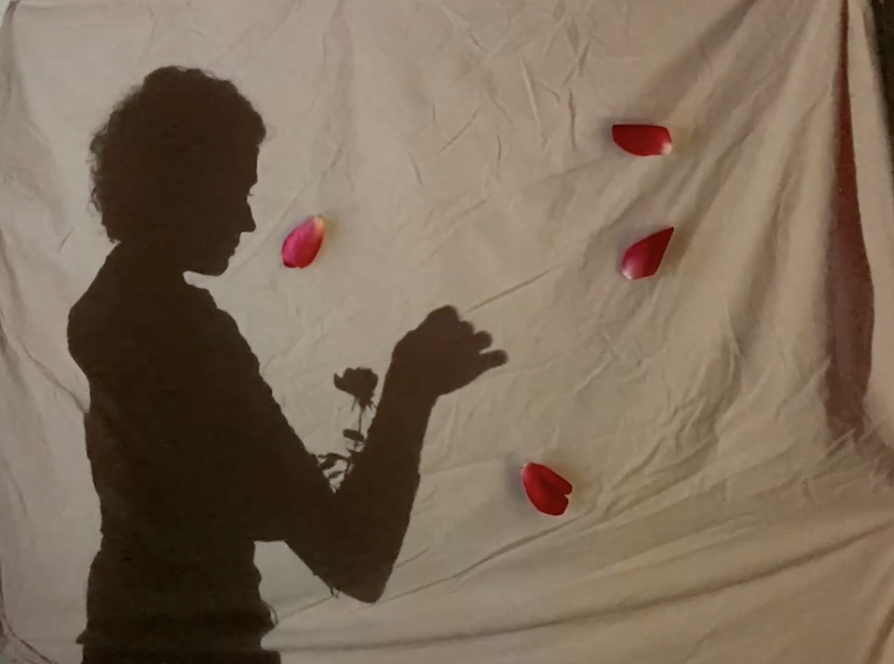
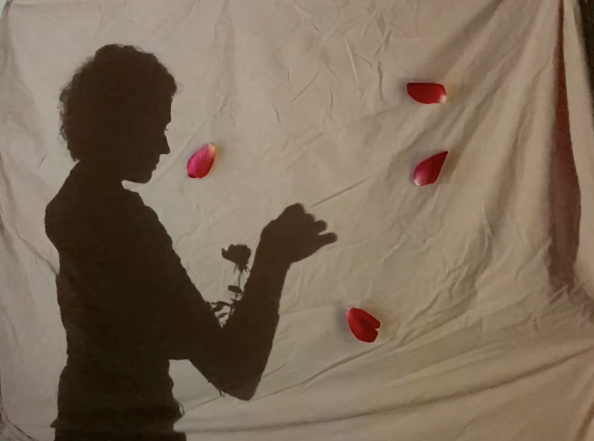

Sadie Dalton's Project

 

Description
An exploration of aeromantic themes in a romantic society, conveyed through cyanotype prints, Japanese stab binding, and a poetic narrative. This project reflects themes of invisibility and self-representation.
Categories
- Tiny Pic
- Foldable
- Time-Based Media
A photograph of a flower stem, symbolic of growth, obscurity, and transformation.
A foldable book with prints and symbolic elements, visually representing the unfolding of the narrative.
A video illustrating the progression of events and the changing visuals tied to the story.